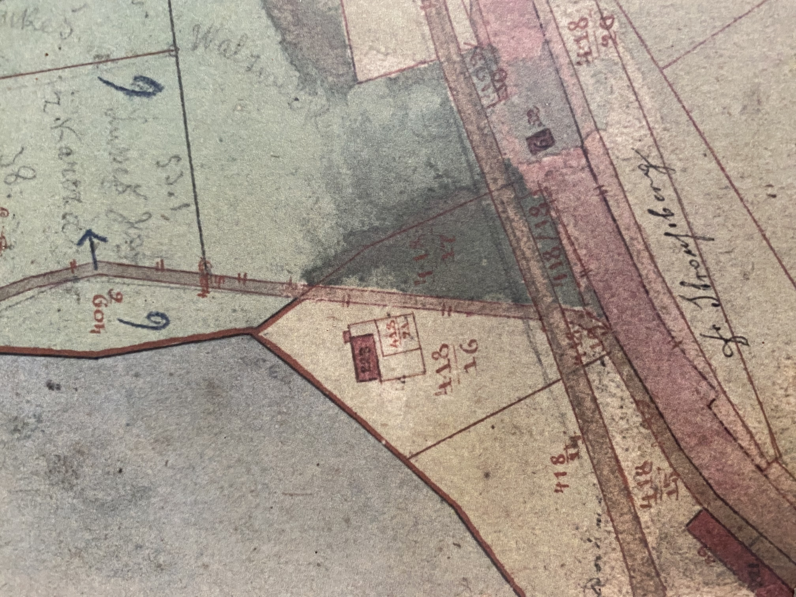

Why Hotel Borek matters
Hotel Borek is being researched as a historical subject in its own right and as part of the wider Borek industrial and railway system. The archive is especially interested in ownership, commercial travel, railway functions, company visitors and the relationship between the hotel, factory and station.
Archive principle: provide the evidence and allow readers to draw their own conclusions. The chronology below distinguishes documented evidence from secondary historical accounts, strong inference and unresolved questions.
Historical chronology and evidence
Construction within Strousberg’s industrial settlement
Historical accounts associate the construction of Hotel Borek with B. H. Strousberg’s development of the Borek industrial complex and planned industrial settlement. A local historical account based on the Kařez memorial book states that Hotel Borek no. 39 was built around 1871 by Strousberg while he was establishing the industrial town and Borek factory.
The official history of Kařez states: Nejrychleji byl postaven hostinec Borek u nádraží Zbiroh…
The National Heritage Institute also associates surviving Hotel Borek čp. 39 with the Strousberg period. Taken together, this provides strong historical support for the hotel being an integral component of the Strousberg industrial and railway settlement rather than an unrelated later hotel.
No surviving 1871 construction contract has yet been identified by this archive.
Building shown beside the railway
The cadastral record shows a building at the later Hotel Borek location beside the railway. Importantly, the map itself does not label the building “Hotel Borek.” Identification of it with the hotel is strengthened by comparison with later industrial documentation, including the factory catalogue, which depicts and explicitly identifies the factory hotel.
{kind=link}

“Tovární hotel a úřednická beseda”
A surviving factory catalogue or industrial illustration explicitly identifies the central building as “Tovární hotel a úřednická beseda” — Factory hotel and officials’ meeting/social house. This places the hotel directly within the factory settlement and indicates a social and meeting function as well as accommodation. The illustration presents the hotel as an important central building among the workers’ colonies, officials’ housing and industrial complex.
Ownership and alterations reported in local history
A historical account based on the Kařez memorial book says that after Strousberg the hotel was acquired by J. Tichý, owner of a Prague variety theatre, and was later purchased by E. Brandeis, associated with the Borek factory. It reports that Brandeis added a staircase, restored first-floor guest rooms as his apartment, and made changes to the garden and water reservoir.
This is presented here as a secondary/local historical account, not as a primary land-register finding. Primary property records remain desirable.
Nationalisation and later institutional ownership
The same secondary historical source states that Hotel Borek was nationalised in 1953. It subsequently belonged to Hospodářské skladištní a výrobní družstvo Plzeň and, from 1969, to Komunální služby Zbiroh.
Later restitution and private ownership are mentioned in the secondary source, but the precise ownership chain still requires primary documentary confirmation.
Sources already identified
- Official Kařez history
- StoryMaps account based on the Kařez memorial book
- National Heritage Institute — Borek
- Additional NPÚ documentation — useful for Strousberg’s broader plans, but geographical wording should be treated cautiously where it extends beyond the precise Hotel Borek site.
Research branches
Ownership
Establish owners, dates and links to the industrial enterprise.
Hotel and factory
Document representatives, customers, suppliers, engineers and other visitors.
Hotel and railway
Reconstruct links to the railway stop, freight, passenger traffic and later station.
People
Identify owners, managers, employees and guests from attributable records.
Images and maps
Collect postcards, photographs, cadastral maps, railway plans and aerial imagery.
Later history
Establish later uses, alterations, ownership changes, survival or demolition.
Contribute evidence
Have a document, photograph, correction, archival reference, source link or historical lead? Send it directly to the Stanice Zbiroh Historical Research Archive.
Proč je Hotel Borek důležitý
Hotel Borek je zkoumán jako samostatné historické téma a současně jako součást širšího průmyslového a železničního systému Borku.
Přispějte důkazy
Máte dokument, fotografii, opravu, archivní odkaz, zdroj nebo historickou stopu? Pošlete ji do Historického výzkumného archivu Stanice Zbiroh.
Warum Hotel Borek wichtig ist
Hotel Borek wird als eigenständiges historisches Thema und zugleich als Teil des größeren Industrie- und Eisenbahnsystems von Borek untersucht.
Belege beitragen
Haben Sie ein Dokument, Foto, eine Korrektur, Archivangabe, Quellenangabe oder historische Spur? Senden Sie sie an das Historische Forschungsarchiv Stanice Zbiroh.